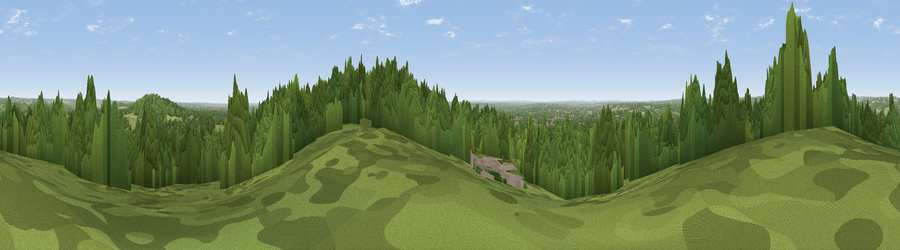

Viewpoint near Crazies Hill
#38042 in England · top 26% of its area beats it · near Crazies HillWhere it is
The exact computed spot (SU 80725 80175). Click the marker for map links.
The view, rendered

A 360° render of this exact spot computed from the terrain model, tree cover and land cover — summer colours, afternoon light, calibrated against photographs of famous viewpoints. Real trees, hedges and buildings will differ in detail.
The panorama
Grey silhouette: terrain skyline in each direction (720 bearings, Earth curvature and refraction included). Dashed green: skyline with trees (+15 m) and buildings (+8 m) as obstacles. Blue strip: how far the ground is visible on each bearing.
Where the view opens
Wedge length = distance to the farthest visible ground on that bearing (vegetation-aware). Rings at 10, 25 and 50 km.
What fills the view
64% woodland · 24% grassland · 9% cropland · 3% built-up
Angular shares of the visible panorama (visual magnitude), not map area. Landscape diversity 0.42 (0–1 Shannon).
Key numbers
More beautiful places nearby
The staircase of upgrades: each row has a higher view potential than everything closer. Driving times are estimates from straight-line distance, calibrated against real road routing — check an actual route before setting out.
| Place | Direction | Drive | Score |
|---|---|---|---|
| Viewpoint near Knowl Hill | ENE · 2 km | ~5 min | 30.1 |
| Viewpoint near Hambleden | NNW · 7 km | ~14 min | 32.4 |
| Fultness Wood Hill | NE · 7 km | ~14 min | 39.0 |
| Viewpoint near Fawley | NW · 10 km | ~19 min | 39.3 |
| Viewpoint near Fawley | NW · 10 km | ~20 min | 48.8 |
| Viewpoint near Cookley Green | NW · 17 km | ~29 min | 68.5 |
| Viewpoint near Watlington | NW · 17 km | ~30 min | 70.6 |
| Viewpoint near Lewknor | NNW · 18 km | ~31 min | 70.8 |
51.51474, -0.83806 · source: screening · position refined by local search. Computed location — check access rights before visiting.